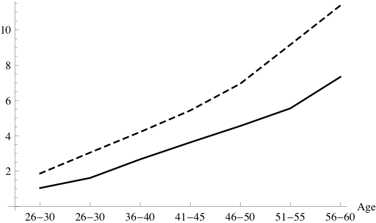

, which is immediately rewarded by a return factor with the proceeds
deposited in a bank account balance:
, which is immediately rewarded by a return factor with the proceeds
deposited in a bank account balance:
SolvingMicroDSOPs, March 7, 2024
Note: The code associated with this document should work (though the Matlab code may be out of date), but has been superceded by the set of tools available in the Econ-ARK toolkit, more specifically the HARK Framework. The SMM estimation code at the end has specifically been superceded by the SolvingMicroDSOPs REMARK
Abstract Dynamic Stochastic Optimization, Method of Simulated
Moments, Structural Estimation
E21, F41
_____________________________________________________________________________________
These notes describe tools for solving microeconomic dynamic stochastic optimization problems,
and show how to use those tools for efficiently estimating a standard life cycle consumption/saving
model using microeconomic data. No attempt is made at a systematic overview of the many possible
technical choices; instead, I present a specific set of methods that have proven useful in my own work
(and explain why other popular methods, such as value function iteration, are a bad idea). Paired
with these notes is Mathematica, Matlab, and Python software that solves the problems described in
the text.
| PDF: | https://github.com/llorracc/SolvingMicroDSOPs/blob/master/SolvingMicroDSOPs.pdf |
| Slides: | https://github.com/llorracc/SolvingMicroDSOPs/blob/master/SolvingMicroDSOPs-Slides.pdf |
| Web: | https://llorracc.github.io/SolvingMicroDSOPs |
| Code: | https://github.com/llorracc/SolvingMicroDSOPs/tree/master/Code |
| Archive: | https://github.com/llorracc/SolvingMicroDSOPs |
| (Contains LaTeX code for this document and software producing figures and results) |
1Carroll: Department of Economics, Johns Hopkins University, Baltimore, MD, http://www.econ2.jhu.edu/people/ccarroll/, ccarroll@jhu.edu, Phone: (410) 516-7602 The notes were originally written for my Advanced Topics in Macroeconomic Theory class at Johns Hopkins University; instructors elsewhere are welcome to use them for teaching purposes. Relative to earlier drafts, this version incorporates several improvements related to new results in the paper “Theoretical Foundations of Buffer Stock Saving” (especially tools for approximating the consumption and value functions). Like the last major draft, it also builds on material in “The Method of Endogenous Gridpoints for Solving Dynamic Stochastic Optimization Problems” published in Economics Letters, available at http://www.econ2.jhu.edu/people/ccarroll/EndogenousArchive.zip, and by including sample code for a method of simulated moments estimation of the life cycle model a la Gourinchas and Parker (2002) and Cagetti (2003). Background derivations, notation, and related subjects are treated in my class notes for first year macro, available at http://www.econ2.jhu.edu/people/ccarroll/public/lecturenotes/consumption. I am grateful to several generations of graduate students in helping me to refine these notes, to Marc Chan for help in updating the text and software to be consistent with Carroll (2006), to Kiichi Tokuoka for drafting the section on structural estimation, to Damiano Sandri for exceptionally insightful help in revising and updating the method of simulated moments estimation section, and to Weifeng Wu and Metin Uyanik for revising to be consistent with the ‘method of moderation’ and other improvements. All errors are my own. This document can be cited as Carroll (2023a) in the references.
Calculating the mathematically optimal amount to save is remarkably difficult. Under well-founded assumptions about the nature of risk (and attitudes toward risk), the problem cannot be solved analytically; computational solutions are the only option. To avoid having to solve this hard problem, past generations of economists showed impressive ingenuity in reformulating the question. Budding graduate students are still taught a host of tricks whose purpose is partly to avoid the resort to numerical solutions: Quadratic or Constant Absolute Risk Aversion utility, perfect markets, perfect insurance, perfect foresight, the “timeless perspective,” the restriction of uncertainty to very special kinds,1 and more.
The motivation for these reformulations is to exchange an intractable general problem for a tractable specific alternative. Unfortunately, the burgeoning literature on numerical solutions has shown that the features that yield tractability also profoundly change the essence of the solution. These tricks are excuses to solve a problem that has defined away the central difficulty: Understanding the proper role of uncertainty (and other complexities like constraints) in optimal intertemporal choice.
These points are not unique to the consumption/saving problem; the same propositions apply to almost any question that involves both intertemporal choice and uncertainty, including many aspects of the behavior of firms and governments.
These lecture notes provide a gentle introduction to a particular set of solution tools and show how they can be used to solve some canonical problems in consumption choice and portfolio allocation. Specifically, the notes describe and solve optimization problems for a consumer facing uninsurable idiosyncratic risk to nonfinancial income (e.g., labor or transfer income),2 with detailed intuitive discussion of the various mathematical and computational techniques that, together, speed the solution by many orders of magnitude compared to “brute force” methods. The problem is solved with and without liquidity constraints, and the infinite horizon solution is obtained as the limit of the finite horizon solution. After the basic consumption/saving problem with a deterministic interest rate is described and solved, an extension with portfolio choice between a riskless and a risky asset is also solved. Finally, a simple example is presented of how to use these methods (via the statistical ‘method of simulated moments’ or MSM; sometimes called ‘simulated method of moments’ or SMM) to estimate structural parameters like the coefficient of relative risk aversion (a la Gourinchas and Parker (2002) and Cagetti (2003)).
The usual analysis of dynamic stochastic programming problems packs a great many events (intertemporal choice, stochastic shocks, intertemporal returns, income growth, and more) into a small number of steps and variables. For the detailed analysis here, we will be careful to disarticulate everything that happens in the problem explicitly into separate steps so that each element can be scrutinized and understood in isolation.
We are interested in the behavior a consumer who begins period with a certain amount
of ‘capital’ , which is immediately rewarded by a return factor with the proceeds
deposited in a bank account balance:
| (1) |
Simultaneously with the realization of the capital return, the consumer also receives noncapital income , which is determined by multiplying the consumer’s ‘permanent income’ by a transitory shock :
| (2) |
whose whose expectation is 1 (that is, before realization of the transitory shock, the consumer’s expectation is that actual income will on average be equal to permanent income ).
The combination of bank balances and income define’s the consumer’s ‘market resources’ (sometimes called ‘cash-on-hand’, following Deaton (1992)):
| (3) |
which are available to be spent on consumption .
The consumer’s goal is to maximize discounted utility from consumption over the rest of a lifetime whose last period is date :
| (4) |
For now, we will assume that income evolves according to:
| (5) |
Equation (5) indicates that we are allowing for a predictable average profile of income growth over the lifetime (to capture typical career wage paths, pension arrangements, etc).3 Finally, the utility function is of the Constant Relative Risk Aversion (CRRA), form, .
It is well known that this problem can be rewritten in recursive (Bellman) form
| (6) |
subject to the Dynamic Budget Constraint (DBC) implicitly defined by equations (1)-(3) and the transition equation that defines next period’s initial capital as this period’s end-of-period assets:
| (7) |
The single most powerful method for speeding the solution of such models is to redefine the problem in a way that reduces the number of state variables (if possible). Here, the obvious idea is to see whether the problem can be rewritten in terms of the ratio of various variables to permanent noncapital (‘labor’) income (henceforth for brevity referred to simply as ‘permanent income.’)
In the last period of life, there is no future, , so the optimal plan is to consume everything:
| (8) |
Now define nonbold variables as the bold variable divided by the level of permanent income in the same period, so that, for example, ; and define .4 For our CRRA utility function, , so equation (8) can be rewritten as
|
|
Now define a new optimization problem:
| (9) |
where the last equation is the normalized version of the transition equation for .5 Then it is easy to see that for ,
|
|
and so on back to all earlier periods. Hence, if we solve the problem (9) which has only a single state variable , we can obtain the levels of the value function, consumption, and all other variables from the corresponding permanent-income-normalized solution objects by multiplying each by , e.g. (or, for the value function, . We have thus reduced the problem from two continuous state variables to one (and thereby enormously simplified its solution).
For some problems it will not be obvious that there is an appropriate ‘normalizing’ variable, but many problems can be normalized if sufficient thought is given. For example, Valencia (2006) shows how a bank’s optimization problem can be normalized by the level of the bank’s productivity.
The first order condition for (9) with respect to is
| (10) |
and because the Envelope theorem tells us that
| (11) |
we can substitute the LHS of (11) for the RHS of (10) to get
| (12) |
and rolling this equation forward one period yields
| (13) |
while substituting the LHS in equation (10) gives us the Euler equation for consumption
| (14) |
Although our focus so far has been on the consumer’s consumption problem once is known, for constructing the computational solution it will be useful to distinguish a sequence of three moves (we use the word ‘moves’ to capture the fact that we are not really thinking of these as occurring at different moments in time – only that we are putting the things that happen within a given moment into an ordered sequence). The first move captures calculations that need to be performed before the shocks are realized, the middle move is after shocks have been realized but before the consumption decision has been made (this corresponds to the timing of in the treatment above), and the final move captures the situation after the consumption decision has been made.
We need to define notation for these three moves within a period. We will use as a marker for the move before shocks have been realized, to indicate the move in which the choice is made, and as the indicator for the situation once the choice has been made.
| (15) |
| (16) |
| (17) |
where the last line illustrates the notation for addressing the beginning move of a future period.
Putting all this together, we can write the ‘continuation value’ function from the perspective of the end of the period as
| (18) |
because it returns the expected value associated with ending period with any given amount of assets. Differentiating with respect to , we get
| (19) |
or, substituting from equation (13),
| (20) |
Finally, note for future use that the first order condition (10) can now be rewritten compactly as
| (21) |
The code which implements the tasks outlined each of the sections to come are available in the SolvingMicroDSOPs jupyter notebook, written in Python programming language. The benefits of Python lie in its utilization of object-oriented programming (OOP). The notebook imports various modules, including the standard numpy and scipy modules used for numerical methods in Python, as well as some user-defined modules designed to provide numerical solutions to the consumer’s problem from the previous section. Before delving into the computational exercise, it is essential to touch on the practicality of these custom modules.
In this exercise, two primary user-defined modules are frequently imported and utilized. The first is the gothic_class module, which contains functions describing the end-of-period value functions found in equations (15) - (17) (and the subsequent first and second derivatives). The advantage of defining functions in the code which decompose the consumer’s optimal behavior in a given period will become evident in section 5.6
The resources module is also used repeatedly throughout the notebook. This file has three primary objectives: (i) providing functions that discretize the continuous distributions from the theoretical model that describe the uncertainty a consumer faces, (ii) defining the utility function over consumption under a number of specifications, and (iii) enhancing the grid of end-of-period assets for which functions (such as those from the gothic_class module) will be defined. These objectives will be discussed in greater detail and with respect to the numerical solution to the problem in subsequent sections of this document.
The problem in the second-to-last period of life is:
|
|
and using (1) the fact that ; (2) the definition of ; (3) the definition of the expectations operator, and (4) the fact that is nonstochastic, this becomes
|
|
where is the cumulative distribution function for .
In principle, the maximization implicitly defines a function that yields optimal consumption in period for any given level of resources . Unfortunately, there is no general analytical solution to this maximization problem, and so for any given we must use numerical computational tools to find the that maximizes the expression. This is excruciatingly slow because for every potential to be considered, the integral must be calculated numerically, and numerical integration is very slow.
Our first time-saving trick is therefore to construct a discrete approximation to the lognormal distribution that can be used in place of numerical integration. That is, we want to approximate the expectation of a function by value at set of points , each of which is given an associated probability weight :
|
|
because adding weighted values to each other is enormously faster than general-purpose numerical integration.
Such a procedure is called a ‘quadrature’ method of integration; Tanaka and Toda (2013) survey a number of options, but for our purposes here we choose the one which is perhaps easiest to understand: An ‘equiprobable’ approximation (that is, one where each of the values of has an equal probability, equal to ).
We calculate such an -point approximation as follows.
Define a set of points from to on the interval as the elements of the set .6 Call the inverse of the distribution , and define the points . Then the conditional mean of in each of the intervals numbered 1 to is:
| (22) |
The method is illustrated in Figure 1. The solid continuous curve represents the “true” CDF for a lognormal distribution such that , . The short vertical line segments represent the equiprobable values of which are used to approximate this distribution.7
Substituting into our definition of , for
| (23) |
so we can rewrite the maximization problem as
| (24) |
In the SolvingMicroDSOPs notebook, the section “Discretization of the Income Shock Distribution” provides code which instantiates the DiscreteApproximation class defined in the resources module. This class creates a discretization of the continuous log-normal distribution of transitory shocks to income by utilizing seven points, where the mean value is , and the standard deviation is .
With a close look at the DiscreteApproximation class and its subclasses, one may notice that the code is a computational implementation of the mathematical description of equiprobable discrete approximation in this section. Moreover, the Python code generates a graph of the discretized distribution, similar to the one depicted in figure 1.
Given a particular value of , a numerical maximization routine can now find the that maximizes (24) in a reasonable amount of time.
The SolvingMicroDSOPs notebook follows a series of steps to achieve this. Initially, parameter values for the coefficient of relative risk aversion (CRRA, ), the discount factor (), the permanent income growth factor (), and the risk-free interest rate () are specified in “Define Parameters, Grids, and the Utility Function”. Predictably, the CRRA utility function is defined for the given value of here as well.
After defining the utility function, the natural borrowing constraint is defined to be , which will be discussed in greater depth in section 5.7. Following the reformulation of the maximization problem, an instance of the gothic_class is created using the specifications and the discretized distribution described in the previous lines of code; this is required to provide the numerical solution.
The heart of the program responsible for computing an estimated consumption
function begins in “Solving the Model by Value Function Maximization”, where
a grid characterizing the possible values of market resources ( ) is initialized,
which is the first step in computing the optimal consumption and value functions.
For each of the
) is initialized,
which is the first step in computing the optimal consumption and value functions.
For each of the  values, the consumption values that solve the minimization
problem equivalent to (24) are computed using scipy’s minimize function. This level
of consumption is used to calculate the value function at each point in the grid
of market resources. The process is repeated until all grid points have been
exhaused.
values, the consumption values that solve the minimization
problem equivalent to (24) are computed using scipy’s minimize function. This level
of consumption is used to calculate the value function at each point in the grid
of market resources. The process is repeated until all grid points have been
exhaused.
Finally, the previously computed values of optimal consumption and the grid of market resources are utilized to generate a graph of the approximated consumption function for this specific instance of the problem. To reduce the computational expenses of solving the problem, the process is repeated with a more sparse grid of market resources.
Given a set of points on a function (in this case, the consumption function ), we can create an object called an ‘interpolating function’ which when applied to an input will yield the value of that corresponds to a linear ‘connect-the-dots’ interpolation of the value of from the points, creating a function that aims to provide an approximation of the functions whose points have been sampled.
This is accompished in “An Interpolated Consumption Function”, where the InterpolatedUnivariateSpline function is called from the scipy module to define an approximation to the consumption function . That is, when called with an that is equal to one of the points in mVec_int returns the associated value of , and when called with a value of that is not exactly equal to one of the mVec_int, returns the value of that reflects a linear interpolation between the associated with the two mVec_int points nearest to . Thus if the function is called with and the nearest gridpoints are and then the value of returned by the function would be . We can define a numerical approximation to the value function in an exactly analogous way.
Figures 2 and 3 show plots of the and InterpolatedUnivariateSpline function calls. While the function looks very smooth, the fact that the function is a set of line segments is very evident. This figure provides the beginning of the intuition for why trying to approximate the value function directly is a bad idea (in this context).8
The InterpolatedUnivariateSpline function works well in the sense that it generates a good approximation to the true optimal consumption function. However, there is a clear inefficiency in the program: Since it uses equation (24), for every value of the program must calculate the utility consequences of various possible choices of as it searches for the best choice.
For any given value of , notice that there is a good chance that the program may end up calculating the corresponding many times while maximizing utility from different ’s. For example, it is possible that the program will calculate the value of ending the period with dozens of times. It would be much more efficient if the program could make that calculation once and then merely recall the value when it is needed again.
This can be achieved using the same interpolation technique used above to construct
a direct numerical approximation to the value function: Define a grid of possible
values for saving at time , (aVec in the code), designating the specific
points ; for each of these values of  , calculate the vector as the
collection of points using equation (18); then construct an
InterpolatingUnivariateSpline object by passing the lists aVec and
gothicvVec as arguments. These lists contain the points of the and vectors,
respectively.
, calculate the vector as the
collection of points using equation (18); then construct an
InterpolatingUnivariateSpline object by passing the lists aVec and
gothicvVec as arguments. These lists contain the points of the and vectors,
respectively.
As seen in the section “Interpolating Expectations”, we are now interpolating for the function that reveals the expected value of ending the period with a given amount of assets.9 The problem is solved in the same block withthe remaining following lines of code. Figure 4 compares the true value function to the approximation produced following the interpolation procedure; the functions are of course identical at the gridpoints chosen for and they appear reasonably close except in the region below .
Nevertheless, the resulting consumption rule obtained when is used instead of is surprisingly bad, as shown in figure 5. For example, when goes from 2 to 3, goes from about 1 to about 2, yet when goes from 3 to 4, goes from about 2 to about 2.05. The function fails even to be strictly concave, which is distressing because Carroll and Kimball (1996) prove that the correct consumption function is strictly concave in a wide class of problems that includes this problem.
Loosely speaking, our difficulty reflects the fact that the consumption choice is governed by the marginal value function, not by the level of the value function (which is the object that we approximated). To understand this point, recall that a quadratic utility function exhibits risk aversion because with a stochastic ,
| (25) |
where is the ‘bliss point’. However, unlike the CRRA utility function, with quadratic utility the consumption/saving behavior of consumers is unaffected by risk since behavior is determined by the first order condition, which depends on marginal utility, and when utility is quadratic, marginal utility is unaffected by risk:
| (26) |
Intuitively, if one’s goal is to accurately capture choices that are governed by marginal value, numerical techniques that approximate the marginal value function will yield a more accurate approximation to optimal behavior than techniques that approximate the level of the value function.
The first order condition of the maximization problem in period is:
| (27) |
In the notebook, “Value Function versus the First Order Condition” completes the task of finding the values of consumption which satisfy the first order condition in (27) using the brentq function from the scipy module. Notice that the use of u.prime and gothic.VP_Tminus1 is possible since they are already defined in the resources and gothic_class modules.
The downward-sloping curve in Figure 6 shows the value of for our baseline
parameter values for (the horizontal axis). The solid upward-sloping curve
shows the value of the RHS of (27) as a function of under the assumption that
. Constructing this figure is rather time-consuming, because for every value of
plotted we must calculate the RHS of (27). The value of for which the RHS and
LHS of (27) are equal is the optimal level of consumption given that , so the
intersection of the downward-sloping and the upward-sloping curves gives the optimal value of
 . As we can see, the two curves intersect just below . Similarly, the
upward-sloping dashed curve shows the expected value of the RHS of (27) under the
assumption that , and the intersection of this curve with yields the
optimal level of consumption if . These two curves intersect slightly below
. Thus, increasing from 3 to 4 increases optimal consumption by about
0.5.
. As we can see, the two curves intersect just below . Similarly, the
upward-sloping dashed curve shows the expected value of the RHS of (27) under the
assumption that , and the intersection of this curve with yields the
optimal level of consumption if . These two curves intersect slightly below
. Thus, increasing from 3 to 4 increases optimal consumption by about
0.5.
Now consider the derivative of our function . Because we have constructed as a linear interpolation, the slope of between any two adjacent points is constant. The level of the slope immediately below any particular gridpoint is different, of course, from the slope above that gridpoint, a fact which implies that the derivative of follows a step function.
The solid-line step function in Figure 6 depicts the actual value of . When we attempt to find optimal values of given using , the numerical optimization routine will return the for which . Thus, for the program will return the value of for which the downward-sloping curve intersects with the ; as the diagram shows, this value is exactly equal to 2. Similarly, if we ask the routine to find the optimal for , it finds the point of intersection of with ; and as the diagram shows, this intersection is only slightly above 2. Hence, this figure illustrates why the numerical consumption function plotted earlier returned values very close to for both and .
We would obviously obtain much better estimates of the point of intersection between and if our estimate of were not a step function. In fact, we already know how to construct linear interpolations to functions, so the obvious next step is to construct a linear interpolating approximation to the expected marginal value of end-of-period assets function . That is, we calculate
| (28) |
at the points in aVec yielding and construct as the linear interpolating function that fits this set of points.
This is done by making a call to the InterpolatedUnivariateSpline function, passing it aVec and vpVec as arguments. Note that in defining the list of values vpVec, we again makes use of the predefined gothic.VP_Tminus1 function. These steps are the embodiment of equation (28), and construct the interpolation of the expected marginal value of end-of-period assets as described above.
The results are shown in Figure 7. The linear interpolating approximation looks roughly as good (or bad) for the marginal value function as it was for the level of the value function. However, Figure 8 shows that the new consumption function (long dashes) is a considerably better approximation of the true consumption function (solid) than was the consumption function obtained by approximating the level of the value function (short dashes).
Even the new-and-improved consumption function diverges notably from the true solution, especially at lower values of . That is because the linear interpolation does an increasingly poor job of capturing the nonlinearity of at lower and lower levels of .
This is where we unveil our next trick. To understand the logic, start by considering the case where and there is no uncertainty (that is, we know for sure that income next period will be ). The final Euler equation is then:
| (29) |
In the case we are now considering with no uncertainty and no liquidity constraints, the optimizing consumer does not care whether a unit of income is scheduled to be received in the future period or the current period ; there is perfect certainty that the income will be received, so the consumer treats it as equivalent to a unit of current wealth. Total resources therefore are comprised of two types: current market resources and ‘human wealth’ (the PDV of future income) of (where we use the Gothic font to signify that this is the expectation, as of the END of the period, of the income that will be received in future periods; it does not include current income, which has already been incorporated into ).
The optimal solution is to spend half of total lifetime resources in period and the remainder in period . Since total resources are known with certainty to be , and since this implies that
| (30) |
Of course, this is a highly nonlinear function. However, if we raise both sides of (30) to the power the result is a linear function:
| (31) |
This is a specific example of a general phenomenon: A theoretical literature cited in Carroll and Kimball (1996) establishes that under perfect certainty, if the period-by-period marginal utility function is of the form , the marginal value function will be of the form for some constants . This means that if we were solving the perfect foresight problem numerically, we could always calculate a numerically exact (because linear) interpolation. To put this in intuitive terms, the problem we are facing is that the marginal value function is highly nonlinear. But we have a compelling solution to that problem, because the nonlinearity springs largely from the fact that we are raising something to the power . In effect, we can ‘unwind’ all of the nonlinearity owing to that operation and the remaining nonlinearity will not be nearly so great. Specifically, applying the foregoing insights to the end-of-period value function , we can define
| (32) |
which would be linear in the perfect foresight case. Thus, our procedure is to calculate the values of at each of the gridpoints, with the idea that we will construct as the interpolating function connecting these points.
This is the appropriate moment to ask an awkward question we have so far neglected: How should a function like be evaluated outside the range of points spanned by for which we have calculated the corresponding gridpoints used to produce our linearly interpolating approximation (as described in section 5.3)?
The natural answer would seem to be linear extrapolation; for example, we could use
| (33) |
for values of , where is the derivative of the function at the bottommost gridpoint (see below). Unfortunately, this approach will lead us into difficulties. To see why, consider what happens to the true (not approximated) as approaches the value . From (28) we have
| (34) |
But since , exactly at the first term in the summation would be which is infinity. The reason is simple: is the PDV, as of , of the minimum possible realization of income in period (). Thus, if the consumer borrows an amount greater than or equal to (that is, if the consumer ends with ) and then draws the worst possible income shock in period , they will have to consume zero in period (or a negative amount), which yields utility and marginal utility (or undefined utility and marginal utility).
These reflections lead us to the conclusion that the consumer faces a ‘self-imposed’ liquidity constraint (which results from the precautionary motive): They will never borrow an amount greater than or equal to (that is, assets will never reach the lower bound of ).10 The constraint is ‘self-imposed’ in the sense that if the utility function were different (say, Constant Absolute Risk Aversion), the consumer would be willing to borrow more than because a choice of zero or negative consumption in period would yield some finite amount of utility.11
This self-imposed constraint cannot be captured well when the function is approximated by a piecewise linear function like , because a linear approximation can never reach the correct gridpoint for To see what will happen instead, note first that if we are approximating the smallest value in aVec must be greater than (because the expectation for any gridpoint is undefined). Then when the approximating function is evaluated at some value less than the first element in aVec, the approximating function will linearly extrapolate the slope that characterized the lowest segment of the piecewise linear approximation (between aVec[0] and aVec[1]), a procedure that will return a positive finite number, even if the requested point is below . This means that the precautionary saving motive is understated, and by an arbitrarily large amount as the level of assets approaches its true theoretical minimum .
The foregoing logic demonstrates that the marginal value of saving approaches infinity as . But this implies that ; that is, as approaches its minimum possible value, the corresponding amount of must approach its minimum possible value: zero.
The upshot of this discussion is a realization that all we need to do is to augment each of the and vectors with an extra point so that the first element in the list used to produce our interpolation function is . This is done in section “The Self-Imposed ‘Natural’ Borrowing Constraint and the Lower Bound” of the notebook, which can be seen in the defined lists aVecBot and cVec3Bot.
From there, we plot the lists that have been appended with the natural borrowing contraint and the associated minimal level of consumption. The subseqeunt figure 9 shows the result of this procedure. The solid line calculates the exact numerical value of while the dashed line is the linear interpolating approximation This figure illustrates the value of the transformation: The true function is close to linear, and so the linear approximation is almost indistinguishable from the true function except at the very lowest values of .
Figure 10 similarly shows that when we generate as (dashed line) we obtain a much closer approximation to the true function (solid line) than we did in the previous program which did not do the transformation (Figure 7). The calculation of marginal value using the transformation is performed and the associated figure is produced.
Our solution procedure for still requires us, for each point in (mVec in the code), to use a numerical rootfinding algorithm to search for the value of that solves . Unfortunately, rootfinding is a notoriously computation-intensive (that is, slow!) operation.
Our next trick lets us completely skip the rootfinding step. The method can be understood by noting that any arbitrary value of (greater than its lower bound value ) will be associated with some marginal valuation as of the end of period , and the further observation that it is trivial to find the value of that yields the same marginal valuation, using the first order condition,
| (35) |
But with mutually consistent values of and (consistent, in the sense that they are the unique optimal values that correspond to the solution to the problem in a single state), we can obtain the that corresponds to both of them from
| (36) |
These gridpoints are “endogenous” in contrast to the usual solution method of specifying some ex-ante grid of values of and then using a rootfinding routine to locate the corresponding optimal . This routine is performed in “Endogenous Gridpoints” . First, the gothic.C_Tminus1 function is called for each of the pre-specfied values of end-of-period assets stored in aVec. These values of consumption and assets are used to produce the list of endogenous gridpoints, stored in the object mVec_egm. With the values in hand, we can generate a set of and pairs that can be interpolated between in order to yield at virtually zero computational cost!12 This is done in the final line of code in this block, and the following code block produces the graph of the interpolated consumption function using this procedure.
One might worry about whether the points obtained in this way will provide a good representation of the consumption function as a whole, but in practice there are good reasons why they work well (basically, this procedure generates a set of gridpoints that is naturally dense right around the parts of the function with the greatest nonlinearity).
Figure 11 plots the actual consumption function and the approximated consumption
function  derived by the method of endogenous grid points. Compared to the
approximate consumption functions illustrated in Figure 8, is quite close to the actual
consumption function.
derived by the method of endogenous grid points. Compared to the
approximate consumption functions illustrated in Figure 8, is quite close to the actual
consumption function.
Thus far, we have arbitrarily used gridpoints of (augmented in the last subsection by ). But it has been obvious from the figures that the approximated function tends to be farthest from its true value at low values of . Combining this with our insight that is a lower bound, we are now in position to define a more deliberate method for constructing gridpoints for – a method that yields values that are more densely spaced than the uniform grid at low values of . A pragmatic choice that works well is to find the values such that (1) the last value exceeds the lower bound by the same amount as our original maximum gridpoint (in our case, 4.); (2) we have the same number of gridpoints as before; and (3) the multi-exponential growth rate (that is, for some number of exponentiations ) from each point to the next point is constant (instead of, as previously, imposing constancy of the absolute gap between points).
Section “Improve the ” begins by defining a function which takes as arguments the specifications of an initial grid of assets (captured by the arguments minval, maxval, and size) and returns the new grid incorporating the multi-exponential approach outlined above. Then, a call is made to this function and the improved grid of assets is stored in the object aVec_eee. Lastly, the endogenous gridpoint method described in the previous section is performed using this new grid of assets. Notice that the graphs depicted in Figures 12 and 13 are notably closer to their respective truths than the corresponding figures that used the original grid.
Unfortunately, this endogenous gridpoints solution is not very well-behaved outside the original range of gridpoints targeted by the solution method. (Though other common solution methods are no better outside their own predefined ranges). Figure 14 demonstrates the point by plotting the amount of precautionary saving implied by a linear extrapolation of our approximated consumption rule (the consumption of the perfect foresight consumer minus our approximation to optimal consumption under uncertainty, ). Although theory proves that precautionary saving is always positive, the linearly extrapolated numerical approximation eventually predicts negative precautionary saving (at the point in the figure where the extrapolated locus crosses the horizontal axis).
This error cannot be fixed by extending the upper gridpoint; in the presence of serious uncertainty, the consumption rule will need to be evaluated outside of any prespecified grid (because starting from the top gridpoint, a large enough realization of the uncertain variable will push next period’s realization of assets above that top; a similar argument applies below the bottom gridpoint). While a judicious extrapolation technique can prevent this problem from being fatal (for example by carefully excluding negative precautionary saving), the problem is often dealt with using inelegant methods whose implications for the accuracy of the solution are difficult to gauge.
As a preliminary to our solution, define as end-of-period human wealth (the present discounted value of future labor income) for a perfect foresight version of the problem of a ‘risk optimist:’ a consumer who believes with perfect confidence that the shocks will always take the value 1, . The solution to a perfect foresight problem of this kind takes the form13
| (37) |
for a constant minimal marginal propensity to consume given below.
We similarly define as ‘minimal human wealth,’ the present discounted value of labor income if the shocks were to take on their worst possible value in every future period (which we define as corresponding to the beliefs of a ‘pessimist’).
We will call a ‘realist’ the consumer who correctly perceives the true probabilities of the future risks and optimizes accordingly.
A first useful point is that, for the realist, a lower bound for the level of market resources is , because if equalled this value then there would be a positive finite chance (however small) of receiving in every future period, which would require the consumer to set to zero in order to guarantee that the intertemporal budget constraint holds (this is the multiperiod generalization of the discussion in section 5.7 about ). Since consumption of zero yields negative infinite utility, the solution to realist consumer’s problem is not well defined for values of , and the limiting value of the realist’s is zero as .
Given this result, it will be convenient to define ‘excess’ market resources as the amount by which actual resources exceed the lower bound, and ‘excess’ human wealth as the amount by which mean expected human wealth exceeds guaranteed minimum human wealth:
|
|
We can now transparently define the optimal consumption rules for the two perfect foresight problems, those of the ‘optimist’ and the ‘pessimist.’ The ‘pessimist’ perceives human wealth to be equal to its minimum feasible value with certainty, so consumption is given by the perfect foresight solution
|
|
The ‘optimist,’ on the other hand, pretends that there is no uncertainty about future income, and therefore consumes
|
|
It seems obvious that the spending of the realist will be strictly greater than that of the pessimist and strictly less than that of the optimist. Figure 15 illustrates the proposition for the consumption rule in period .
The proof is more difficult than might be imagined, but the necessary work is done in Carroll (2023b) so we will take the proposition as a fact and proceed by manipulating the inequality:
where the fraction in the middle of the last inequality is the ratio of actual precautionary saving (the numerator is the difference between perfect-foresight consumption and optimal consumption in the presence of uncertainty) to the maximum conceivable amount of precautionary saving (the amount that would be undertaken by the pessimist who consumes nothing out of any future income beyond the perfectly certain component).
Defining (which can range from to ), the object in the middle of the last inequality is
| (38) |
and we now define
| (39) |
which has the virtue that it is linear in the limit as approaches .
Given , the consumption function can be recovered from
| (40) |
Thus, the procedure is to calculate at the points corresponding to the log of the points defined above, and then using these to construct an interpolating approximation from which we indirectly obtain our approximated consumption rule by substituting for in equation (40).
Because this method relies upon the fact that the problem is easy to solve if the decision maker has unreasonable views (either in the optimistic or the pessimistic direction), and because the correct solution is always between these immoderate extremes, we call our solution procedure the ‘method of moderation.’
Results are shown in Figure 16; a reader with very good eyesight might be able to detect the barest hint of a discrepancy between the Truth and the Approximation at the far righthand edge of the figure – a stark contrast with the calamitous divergence evident in Figure 14.
Until now, we have calculated the level of consumption at various different gridpoints and used linear interpolation (either directly for or indirectly for, say, ). But the resulting piecewise linear approximations have the unattractive feature that they are not differentiable at the ‘kink points’ that correspond to the gridpoints where the slope of the function changes discretely.
Carroll (2023b) shows that the true consumption function for this problem is ‘smooth:’ It exhibits a well-defined unique marginal propensity to consume at every positive value of . This suggests that we should calculate, not just the level of consumption, but also the marginal propensity to consume (henceforth ) at each gridpoint, and then find an interpolating approximation that smoothly matches both the level and the slope at those points.
This requires us to differentiate (38) and (39), yielding
| (41) |
and (dropping arguments) with some algebra these can be combined to yield
| (42) |
To compute the vector of values of (41) corresponding to the points in , we need the marginal propensities to consume (designated ) at each of the gridpoints, (the vector of such values is ). These can be obtained by differentiating the Euler equation (21) (where we define ):
| (43) |
with respect to , yielding a marginal propensity to have consumed at each gridpoint:
| (44) |
and the marginal propensity to consume at the beginning of the period is obtained from the marginal propensity to have consumed by noting that
|
|
which, together with the chain rule , yields the MPC from
| (45) |
Designating as the approximated consumption rule obtained using an interpolating polynomial approximation to that matches both the level and the first derivative at the gridpoints, Figure 17 plots the difference between this latest approximation and the true consumption rule for period up to the same large value (far beyond the largest gridpoint) used in prior figures. Of course, at the gridpoints the approximation will match the true function; but this figure illustrates that the approximation is quite accurate far beyond the last gridpoint (which is the last point at which the difference touches the horizontal axis). (We plot here the difference between the two functions rather than the level plotted in previous figures, because in levels the approximation error would not be detectable even to the most eagle-eyed reader.)
Often it is useful to know the value function as well as the consumption rule. Fortunately, many of the tricks used when solving for the consumption rule have a direct analogue in approximation of the value function.
Consider the perfect foresight (or “optimist’s”) problem in period :
|
|
where is the present discounted value of consumption. A similar function can be constructed recursively for earlier periods, yielding the general expression
| (46) |
where the second line uses the fact demonstrated in Carroll (2023b) that .
This can be transformed as
|
|
with derivative
|
|
and since is a constant while the consumption function is linear, will also be linear.
We apply the same transformation to the value function for the problem with uncertainty (the “realist’s” problem) and differentiate
|
|
and an excellent approximation to the value function can be obtained by calculating the values of at the same gridpoints used by the consumption function approximation, and interpolating among those points.
However, as with the consumption approximation, we can do even better if we realize that the function for the optimist’s problem is an upper bound for the function in the presence of uncertainty, and the value function for the pessimist is a lower bound. Analogously to (38), define an upper-case
| (47) |
with derivative (dropping arguments)
| (48) |
and an upper-case version of the equation in (39):
| (49) |
with corresponding derivative
| (50) |
and if we approximate these objects then invert them (as above with the and functions) we obtain a very high-quality approximation to our inverted value function at the same points for which we have our approximated value function:
| (51) |
from which we obtain our approximation to the value function and its derivatives as
| (52) |
Although a linear interpolation that matches the level of at the gridpoints is simple, a Hermite interpolation that matches both the level and the derivative of the function at the gridpoints has the considerable virtue that the derived from it numerically satisfies the envelope theorem at each of the gridpoints for which the problem has been solved.
If we use the double-derivative calculated above to produce a higher-order Hermite polynomial, our approximation will also match marginal propensity to consume at the gridpoints; this would guarantee that the consumption function generated from the value function would match both the level of consumption and the marginal propensity to consume at the gridpoints; the numerical differences between the newly constructed consumption function and the highly accurate one constructed earlier would be negligible within the grid.
Carroll (2023b) derives an upper limit  for the MPC as approaches its lower bound.
Using this fact plus the strict concavity of the consumption function yields the proposition
that
for the MPC as approaches its lower bound.
Using this fact plus the strict concavity of the consumption function yields the proposition
that
| (53) |
The solution method described above does not guarantee that approximated consumption will respect this constraint between gridpoints, and a failure to respect the constraint can occasionally cause computational problems in solving or simulating the model. Here, we describe a method for constructing an approximation that always satisfies the constraint.
Defining as the ‘cusp’ point where the two upper bounds intersect:
|
|
we want to construct a consumption function for that respects the tighter upper bound:
Again defining , the object in the middle of the inequality is
As approaches , converges to zero, while as approaches , approaches .
As before, we can derive an approximated consumption function; call it . This function will clearly do a better job approximating the consumption function for low values of while the previous approximation will perform better for high values of .
For middling values of it is not clear which of these functions will perform better. However, an alternative is available which performs well. Define the highest gridpoint below as and the lowest gridpoint above as . Then there will be a unique interpolating polynomial that matches the level and slope of the consumption function at these two points. Call this function .
Using indicator functions that are zero everywhere except for specified intervals,
|
|
we can define a well-behaved approximating consumption function
| (54) |
This just says that, for each interval, we use the approximation that is most appropriate. The function is continuous and once-differentiable everywhere, and is therefore well behaved for computational purposes.
We now construct an upper-bound value function implied for a consumer whose spending behavior is consistent with the refined upper-bound consumption rule.
For , this consumption rule is the same as before, so the constructed upper-bound value function is also the same. However, for values matters are slightly more complicated.
Start with the fact that at the cusp point,
|
|
But for all ,
|
|
and we assume that for the consumer below the cusp point consumption is given by so for
|
|
which is easy to compute because where is as defined above because a consumer who ends the current period with assets exceeding the lower bound will not expect to be constrained next period. (Recall again that we are merely constructing an object that is guaranteed to be an upper bound for the value that the ‘realist’ consumer will experience.) At the gridpoints defined by the solution of the consumption problem can then construct
|
|
and its derivatives which yields the appropriate vector for constructing and . The rest of the procedure is analogous to that performed for the consumption rule and is thus omitted for brevity.
Thus far we have assumed that the interest factor is constant at . Extending the previous derivations to allow for a perfectly forecastable time-varying interest factor would be trivial. Allowing for a stochastic interest factor is less trivial.
The easiest case is where the interest factor is i.i.d.,
| (55) |
where is the risk premium and the adjustment to the mean log return guarantees that an increase in constitutes a mean-preserving spread in the level of the return.
This case is reasonably straightforward because Merton (1969) and Samuelson (1969) showed that for a consumer without labor income (or with perfectly forecastable labor income) the consumption function is linear, with an infinite-horizon MPC14
| (56) |
and in this case the previous analysis applies once we substitute this MPC for the one that characterizes the perfect foresight problem without rate-of-return risk.
The more realistic case where the interest factor has some serial correlation is more complex. We consider the simplest case that captures the main features of empirical interest rate dynamics: An AR(1) process. Thus the specification is
| (57) |
where is the long-run mean log interest factor, is the AR(1) serial correlation coefficient, and is the stochastic shock.
The consumer’s problem in this case now has two state variables, and , and is described by
We approximate the AR(1) process by a Markov transition matrix using standard techniques. The stochastic interest factor is allowed to take on 11 values centered around the steady-state value . Given this Markov transition matrix, conditional on the Markov AR(1) state the consumption functions for the ‘optimist’ and the ‘pessimist’ will still be linear, with identical MPC’s that are computed numerically. Given these MPC’s, the (conditional) realist’s consumption function can be computed for each Markov state, and the converged consumption rules constitute the solution contingent on the dynamics of the stochastic interest rate process.
In principle, this refinement should be combined with the previous one; further exposition of this combination is omitted here because no new insights spring from the combination of the two techniques.
Optimization problems often come with additional constraints that must be satisfied. Particularly common is an ‘artificial’ liquidity constraint that prevents the consumer’s net worth from falling below some value, often zero.15 The problem then becomes
|
|
By definition, the constraint will bind if the unconstrained consumer would choose a level of spending that would violate the constraint. Here, that means that the constraint binds if the that satisfies the unconstrained FOC
| (58) |
is greater than . Call the approximated function returning the level of that satisfies (58). Then the approximated constrained optimal consumption function will be
| (59) |
The introduction of the constraint also introduces a sharp nonlinearity in all of the
functions at the point where the constraint begins to bind. As a result, to get solutions that
are anywhere close to numerically accurate it is useful to augment the grid of values of the
state variable to include the exact value at which the constraint ceases to bind. Fortunately,
this is easy to calculate. We know that when the constraint is binding the consumer is saving
nothing, which yields marginal value of . Further, when the constraint
is binding, . Thus, the largest value of consumption for which the
constraint is binding will be the point for which the marginal utility of consumption is
exactly equal to the (expected, discounted) marginal value of saving 0. We know this
because the marginal utility of consumption is a downward-sloping function and
so if the consumer were to consume more, the marginal utility of that extra
consumption would be below the (discounted, expected) marginal utility of saving, and
thus the consumer would engage in positive saving and the constraint would no
longer be binding. Thus the level of  at which the constraint stops binding
is:16
at which the constraint stops binding
is:16
The constrained problem is solved in section “Artifical Borrowing Constraint” of the notebook, where the variable constrained is set to be a boolean type object. If the value of constrained is true, then the constraint is binding and their consumption behavior is computed to match (59). The resulting consumption rule is shown in Figure 18. For comparison purposes, the approximate consumption rule from Figure 18 is reproduced here as the solid line; this is accomplished by setting the boolean value of constrained to false.
The presence of the liquidity constraint requires three changes to the procedures outlined above:
We redefine , which now is the PDV of receiving next period and – that is, the pessimist believes he will receive nothing beyond period
We augment the end-of-period aVec with zero and with a point with a small positive value so that the generated mVec will the binding point and a point just above it (so that we can better capture the curvature around that point)
We redefine the optimal consumption rule as in equation (59). This ensures that the liquidity-constrained ‘realist’ will consume more than the redefined ‘pessimist,’ so that we will have still between and and the ‘method of moderation’ will proceed smoothly.
As expected, the liquidity constraint only causes a divergence between the two functions at the point where the optimal unconstrained consumption rule runs into the 45 degree line.
Before we solve for periods earlier than , we assume for convenience that in each such
period a liquidity constraint exists of the kind discussed above, preventing  from exceeding
. This simplifies things a bit because now we can always consider an aVec that starts with
zero as its smallest element.
from exceeding
. This simplifies things a bit because now we can always consider an aVec that starts with
zero as its smallest element.
Recall now equations (20) and (21):
|
|
Assuming that the problem has been solved up to period (and thus assuming that we have an approximated ), our solution method essentially involves using these two equations in succession to work back progressively from period to the beginning of life. Stated generally, the method is as follows. (Here, we use the original, rather than the “refined,” method for constructing consumption functions; the generalization of the algorithm below to use the refined method presents no difficulties.)
For the grid of values in aVec_eee, numerically calculate the values of and ,
| (60) |
generating vectors of values and .
Construct a corresponding vector of values of ; similarly construct a corresponding list of MPC’s using equation (45).
Construct a corresponding vector , the levels and first derivatives of , and the levels and first derivatives of .
Construct an interpolating approximation that smoothly matches both the level and the slope at those points.
If we are to approximate the value function, construct a corresponding list of values of
, the levels and first derivatives of , and the levels and first derivatives of ;
and construct an interpolating approximation function  that matches those
points.
that matches those
points.
With  in hand, our approximate consumption function is computed directly from the
appropriate substitutions in (40) and related equations. With this consumption rule in hand,
we can continue the backwards recursion to period and so on back to the beginning of
life.
in hand, our approximate consumption function is computed directly from the
appropriate substitutions in (40) and related equations. With this consumption rule in hand,
we can continue the backwards recursion to period and so on back to the beginning of
life.
Note that this loop does not contain an item for constructing . This is because with in hand, we simply define so there is no need to construct interpolating approximations - the function arises ‘free’ (or nearly so) from our constructed via the usual envelope result (cf. (11)).
In section “Solve for in Multiple Periods”, the natural and artificial borrowing constraints are combined with the endogenous gridpoints method to approximate the optimal consumption function for a specific period. Then, this function is used to compute the approximated consumption in the previous period, and this process is repeated for the number of periods specified by T, as explained earlier.
The essential structure of the program is a loop that iteratively solves for consumption functions by working backward from an assumed final period, using the dictionary cFunc_life to store the interpolated consumption functions up to the beginning period. Consumption in a given period is utilized to determine the endogenous gridpoints for the preceding period. This is the sense in which the computation of optimal consumption is done recursively.
For a realistic life cycle problem, it would also be necessary at a minimum to calibrate a nonconstant path of expected income growth over the lifetime that matches the empirical profile; allowing for such a calibration is the reason we have included the vector in our computational specification of the problem.
As suggested, the code creates the relevant functions for any period in the horizon specified by the variable T, at the given values of . Figure 19 shows for . At least one feature of this figure is encouraging: the consumption functions converge as the horizon extends, something that Carroll (2023b) shows must be true under certain parametric conditions that are satisfied by the baseline parameter values being used here.
We now consider how to solve problems with multiple control variables. (To reduce notational complexity, in this section we set .)
The new control variable that the consumer can now choose is the portion of the portfolio to invest in risky assets. Designating the gross return on the risky asset as , and using to represent the proportion of the portfolio invested in this asset before the return is realized after the beginning of , corresponding to an assumption that the consumer cannot be ‘net short’ and cannot issue net equity), the overall return on the consumer’s portfolio between and will be:
| (61) |
and the maximization problem is
or, more compactly,
|
|
The first order condition with respect to is almost identical to that in the single-control problem, equation (10), with the only difference being that the nonstochastic interest factor is now replaced by ,
| (62) |
and the Envelope theorem derivation remains the same, yielding the Euler equation for consumption
| (63) |
The first order condition with respect to the risky portfolio share is
As before, it will be useful to define as a function that yields the expected value of ending period in a given state. However, now that there are two control variables, the expectation must be defined as a function of the chosen values of both of those variables, because expected end-of-period value will depend not just on how much the agent saves, but also on how the saved assets are allocated between the risky and riskless assets. Thus we define
|
|
which has derivatives
implying that the first order conditions (63) and (64) can be rewritten
| (64) |
Our first step is to specify the stochastic process for . We follow the common practice of assuming that returns are lognormally distributed, where is the equity premium over the returns available on the riskless asset.17
As with labor income uncertainty, it is necessary to discretize the rate-of-return risk in order to have a problem that is soluble in a reasonable amount of time. We follow the same procedure as for labor income uncertainty, generating a set of equiprobable shocks to the rate of return; in a slight abuse of notation, we will designate the portfolio-weighted return (contingent on the chosen portfolio share in equity, and potentially contingent on any other aspect of the consumer’s problem) simply as (where dependence on is allowed to permit the possibility of nonzero correlation between the return on the risky asset and the shock to labor income (for example, in recessions the stock market falls and labor income also declines).
The direct expressions for the derivatives of are
| (65) |
Writing these equations out explicitly makes a problem very apparent: For every different combination of that the routine wishes to consider, it must perform two double-summations of terms. Once again, there is an inefficiency if it must perform these same calculations many times for the same or nearby values of , and again the solution is to construct an approximation to the derivatives of the function.
Details of the construction of the interpolating approximation are given below; assume for the moment that we have the approximations and in hand and we want to proceed. As noted above, nonlinear equation solvers can find the solution to a set of simultaneous equations. Thus we could ask Python to solve
| (66) |
simultaneously for and at the set of potential values defined in mVec. However, multidimensional constrained maximization problems are difficult and sometimes quite slow to solve. There is a better way. Define the problem
where the tilde over indicates that this is the that has been optimized with respect to all of the arguments other than the one still present (). We solve this problem for the set of gridpoints in aVec and use the results to construct the interpolating function .18 With this function in hand, we can use the first order condition from the single-control problem
|
|
to solve for the optimal level of consumption as a function of using the endogenous gridpoints method described above. Thus we have transformed the multidimensional optimization problem into a sequence of two simple optimization problems.
Note the parallel between this trick and the fundamental insight of dynamic programming: Dynamic programming techniques transform a multi-period (or infinite-period) optimization problem into a sequence of two-period optimization problems which are individually much easier to solve; we have done the same thing here, but with multiple dimensions of controls rather than multiple periods.
Following the discussion from section 7.1, to provide a numerical solution to the problem with multiple control variables, we must define expressions that capture the expected marginal value of end-of-period assets with respect to the level of assets and the share invested in risky assets. This is addressed in “Multiple Control Variables”. Inheriting the structure of Python, we establish a new subclass of gothic_class called GothicMC. This subclass preserves the fundamental structure required to resolve the original problem while adding new methods that capture the previously mentioned points. The essential functions in this new class are found in the final four functions that account for the expected marginal value functions with respect to each of the control variables, both for the terminal period and all earlier periods.
Having the GothicMC subclass available, we can proceed with implementing the steps laid out in section 7.2 to solve the problem at hand. Initially, the two distributions that capture the uncertainty faced by consumers in this scenario are discretized. Subsequently, the GothicMC class is invoked with the requisite arguments to create an instance that includes the necessary functions to depict the first-order conditions of the consumer’s problem. Following that, an improved grid of end-of-period assets is established.
Here is where we can see how the approach described in section 7.2 is reflected in the code. For the terminal period, the optimal share of risky assets is determined for each point in aVec_eee, and then the endogenous gridpoints method is employed to compute the optimal consumption level given that the share in the risky asset has been chosen optimally. It’s worth noting that this solution takes into account the possibility of a binding artificial borrowing constraint. Lastly, the interpolation process is executed for both the optimal consumption function and the optimal share of the portfolio in risky assets. These values are stored in their respective dictionaries (mGridPort_life, cGridPort_life, and varsigmaGrid_life) and utilized to conduct the recursive process outlined in section 6, thus yielding the numerical solution for all earlier periods.
Figure 20 plots the first-period consumption function generated by the program; qualitatively it does not look much different from the consumption functions generated by the program without portfolio choice. Figure 21 plots the optimal portfolio share as a function of the level of assets. This figure exhibits several interesting features. First, even with a coefficient of relative risk aversion of 6, an equity premium of only 4 percent, and an annual standard deviation in equity returns of 15 percent, the optimal choice is for the agent to invest a proportion 1 (100 percent) of the portfolio in stocks (instead of the safe bank account with riskless return ) is at values of less than about 2. Second, the proportion of the portfolio kept in stocks is declining in the level of wealth - i.e., the poor should hold all of their meager assets in stocks, while the rich should be cautious, holding more of their wealth in safe bank deposits and less in stocks. This seemingly bizarre (and highly counterfactual) prediction reflects the nature of the risks the consumer faces. Those consumers who are poor in measured financial wealth are likely to derive a high proportion of future consumption from their labor income. Since by assumption labor income risk is uncorrelated with rate-of-return risk, the covariance between their future consumption and future stock returns is relatively low. By contrast, persons with relatively large wealth will be paying for a large proportion of future consumption out of that wealth, and hence if they invest too much of it in stocks their consumption will have a high covariance with stock returns. Consequently, they reduce that correlation by holding some of their wealth in the riskless form.
All of the solution methods presented so far have involved period-by-period iteration from an assumed last period of life, as is appropriate for life cycle problems. However, if the parameter values for the problem satisfy certain conditions (detailed in Carroll (2023b)), the consumption rules (and the rest of the problem) will converge to a fixed rule as the horizon (remaining lifetime) gets large, as illustrated in Figure 19. Furthermore, Deaton (1991), Carroll (1992; 1997) and others have argued that the ‘buffer-stock’ saving behavior that emerges under some further restrictions on parameter values is a good approximation of the behavior of typical consumers over much of the lifetime. Methods for finding the converged functions are therefore of interest, and are dealt with in this section.
Of course, the simplest such method is to solve the problem as specified above for a large number of periods. This is feasible, but there are much faster methods.
In solving an infinite-horizon problem, it is necessary to have some metric that determines when to stop because a solution that is ‘good enough’ has been found.
A natural metric is defined by the unique ‘target’ level of wealth that Carroll (2023b) proves will exist in problems of this kind under certain conditions: The such that
| (67) |
where the accent is meant to signify that this is the value that other ’s ‘point to.’
Given a consumption rule it is straightforward to find the corresponding . So for our problem, a solution is declared to have converged if the following criterion is met: , where is a very small number and measures our degree of convergence tolerance.
Similar criteria can obviously be specified for other problems. However, it is always wise to plot successive function differences and to experiment a bit with convergence criteria to verify that the function has converged for all practical purposes.
This section describes how to use the methods developed above to structurally estimate a life-cycle consumption model, following closely the work of Cagetti (2003).19 The key idea of structural estimation is to look for the parameter values (for the time preference rate, relative risk aversion, or other parameters) which lead to the best possible match between simulated and empirical moments.
Realistic calibration of a life cycle model needs to take into account a few things that
we omitted from the bare-bones model described above. For example, the whole
point of the life cycle model is that life is finite, so we need to include a realistic
treatment of life expectancy; this is done easily enough, by assuming that utility
accrues only if you live, so effectively the rising mortality rate with age is treated as
an extra reason for discounting the future. Similarly, we may want to capture the
demographic evolution of the household (e.g., arrival and departure of kids). A common
way to handle that, too, is by modifying the discount factor (arrival of a kid might
increase the total utility of the household by, say, 0.2, so if the ‘pure’ rate of time
preference were  the ‘household-size-adjusted’ discount factor might be 1.2. We
therefore modify the model presented above to allow age-varying discount factors that
capture both mortality and family-size changes (we just adopt the factors used by
Cagetti (2003) directly), with the probability of remaining alive between and
captured by and with now reflecting all the age-varying discount factor
adjustments (mortality, family-size, etc). Using (the Hebrew cognate of )
for the ‘pure’ time preference factor, the value function for the revised problem
is
the ‘household-size-adjusted’ discount factor might be 1.2. We
therefore modify the model presented above to allow age-varying discount factors that
capture both mortality and family-size changes (we just adopt the factors used by
Cagetti (2003) directly), with the probability of remaining alive between and
captured by and with now reflecting all the age-varying discount factor
adjustments (mortality, family-size, etc). Using (the Hebrew cognate of )
for the ‘pure’ time preference factor, the value function for the revised problem
is
| (68) |
subject to the constraints
|
|
where
|
|
and all the other variables are defined as in section 2.
Households start life at age and live with probability 1 until retirement ().
Thereafter the survival probability shrinks every year and agents are dead by  as
assumed by Cagetti.
as
assumed by Cagetti.
Transitory and permanent shocks are distributed as follows:
| (69) |
where is the probability of unemployment (and unemployment shocks are turned off after retirement).
The parameter values for the shocks are taken from Carroll (1992), , , and
.20
The income growth profile is from Carroll (1997) and the
values of and are obtained from Cagetti (2003) (Figure
22).21
The interest rate is assumed to equal  . The model parameters are included in Table
1.
. The model parameters are included in Table
1.
The structural estimation of the parameters and is carried out using the procedure specified in the following section, which is then implemented in the StructEstimation.py file. This file consists of two main components. The first section defines the objects required to execute the structural estimation procedure, while the second section executes the procedure and various optional experiments with their corresponding commands. The next section elaborates on the procedure and its accompanying code implementation in greater detail.
When economists say that they are performing “structural estimation” of a model like this, they mean that they have devised a formal procedure for searching for values for the parameters and at which some measure of the model’s outcome (like “median wealth by age”) is as close as possible to an empirical measure of the same thing. Here, we choose to match the median of the wealth to permanent income ratio across 7 age groups, from age up to .22 The choice of matching the medians rather the means is motivated by the fact that the wealth distribution is much more concentrated at the top than the model is capable of explaining using a single set of parameter values. This means that in practice one must pick some portion of the population who one wants to match well; since the model has little hope of capturing the behavior of Bill Gates, but might conceivably match the behavior of Homer Simpson, we choose to match medians rather than means.
As explained in section 3, it is convenient to work with the normalized version of the model which can be written in Bellman form as:
|
|
with the first order condition:
| (70) |
The first substantive step in this estimation procedure is to solve for the consumption functions at each age. We need to discretize the shock distribution and solve for the policy functions by backward induction using equation (70) following the procedure in sections 5 and 6. The latter routine is slightly complicated by the fact that we are considering a life-cycle model and therefore the growth rate of permanent income, the probability of death, the time-varying discount factor and the distribution of shocks will be different across the years. We thus must ensure that at each backward iteration the right parameter values are used.
Correspondingly, the first part of the StructEstimation.py file begins by defining the agent type by inheriting from the baseline agent type IndShockConsumerType, with the modification to include time-varying discount factors. Next, an instance of this “life-cycle” consumer is created for the estimation procedure. The number of periods for the life cycle of a given agent is set and, following Cagetti, (2003), we initialize the wealth to income ratio of agents at age by randomly assigning the equal probability values to , and . In particular, we consider a population of agents at age 25 and follow their consumption and wealth accumulation dynamics as they reach the age of , using the appropriate age-specific consumption functions and the age-varying parameters. The simulated medians are obtained by taking the medians of the wealth to income ratio of the age groups.
To complete the creation of the consumer type needed for the simulation, a history of shocks is drawn for each agent across all periods by invoking the make_shock_history function. This involves discretizing the shock distribution for as many points as the number of agents we want to simulate and then randomly permuting this shock vector as many times as we need to simulate the model for. In this way, we obtain a time varying shock for each agent. This is much more time efficient than drawing at each time from the shock distribution a shock for each agent, and also ensures a stable distribution of shocks across the simulation periods even for a small number of agents. (Similarly, in order to speed up the process, at each backward iteration we compute the consumption function and other variables as a vector at once.)
With the age-varying consumption functions derived from the life-cycle agent, we can proceed to generate simulated data and compute the corresponding medians. Estimating the model involves comparing these simulated medians with empirical medians, measuring the model’s success by calculating the difference between the two. However, before performing the necessary steps of solving and simulating the model to generate simulated moments, it’s important to note a difficulty in producing the target moments using the available data.
Specifically, defining as the set of parameters to be estimated (in the current case ), we could search for the parameter values which solve
| (71) |
where and are respectively the empirical and simulated medians of the wealth to permanent income ratio for age group . A drawback of proceeding in this way is that it treats the empirically estimated medians as though they reflected perfect measurements of the truth. Imagine, however, that one of the age groups happened to have (in the consumer survey) four times as many data observations as another age group; then we would expect the median to be more precisely estimated for the age group with more observations; yet (71) assigns equal importance to a deviation between the model and the data for all age groups.
We can get around this problem (and a variety of others) by instead minimizing a slightly more complex object:
| (72) |
where is the weight of household in the entire population,23 and is the empirical wealth to permanent income ratio of household whose head belongs to age group . is needed because unequal weight is assigned to each observation in the Survey of Consumer Finances (SCF). The absolute value is used since the formula is based on the fact that the median is the value that minimizes the sum of the absolute deviations from itself.
With this in mind, we turn our attention to the computation of the weighted median wealth target moments for each age cohort using this data from the 2004 Survery of Consumer Finances on household wealth. The objects necessary to accomplish this task are weighted_median and get_targeted_moments. The actual data are taken from several waves of the SCF and the medians and means for each age category are plotted in figure 23. More details on the SCF data are included in appendix A.

We now turn our attention to the the two key functions in this section of the code file. The first, simulate_moments, executes the solving (solve) and simulation (simulation) steps for the defined life-cycle agent. Subsequently, the function uses the agents’ tracked levels of wealth based on their optimal consumption behavior to compute and store the simulated median wealth to income ratio for each age cohort. The second function, smmObjectiveFxn, calls the simulate_moments function to create the objective function described in (72), which is necessary to perform the SMM estimation.
Thus, for a given pair of the parameters to be estimated, the single call to the function smmObjectiveFxn executes the following:
solves for the consumption functions for the life-cycle agent
simulates the data and computes the simulated medians
returns the value of equation (72)
We delegate the task of finding the coefficients that minimize the smmObjectiveFxn function to the minimize_nelder_mead function, which is defined elsewhere and called in the second part of this file. This task can be quite time demanding and rather problematic if the smmObjectiveFxn function has very flat regions or sharp features. It is thus wise to verify the accuracy of the solution, for example by experimenting with a variety of alternative starting values for the parameter search.
The final object defined in this first part of the StructEstimation.py file is calculateStandardErrorsByBootstrap. As the name suggsts, the purpose of this function is to compute the standard errors by bootstrap.24 This involves:
drawing new shocks for the simulation
drawing a random sample (with replacement) of actual data from the SCF
obtaining new estimates for and
We repeat the above procedure several times (Bootstrap) and take the standard deviation for each of the estimated parameters across the various bootstrap iterations.
A common drawback in commonly used structural estimation procedures is a lack of transparency in its estimates. As Andrews, Gentzkow, and Shapiro (2017) notes, a researcher employing such structural empirical methods may be interested in how alternative assumptions (such as misspecification or measurement bias in the data) would “change the moments of the data that the estimator uses as inputs, and how changes in these moments affect the estimates”. The authors provide a measure of sensitivity for given estimator that makes it easy to map the effects of different assumptions on the moments into predictable bias in the estimates for non-linear models.
In the language of Andrews, Gentzkow, and Shapiro (2017), section 9 is aimed at providing an estimator that has some true value by assumption. Under the assumption of the researcher, the empirical targets computed from the SCF is measured accurately. These moments of the data are precisely what determine our estimate , which minimizes (72). Under alternative assumptions , such that a given cohort is mismeasured in the survey, a different estimate is computed. Using the plug-in estimate provided by the authors, we can see quantitatively how our estimate changes under these alternative assumptions which correspond to mismeasurement in the median wealth to income ratio for a given age cohort.
The second part of the file StructEstimation.py defines a function main which produces our and estimates with standard errors using 10,000 simulated agents by setting the positional arguments estimate_model and compute_standard_errors to true.25 Results are reported in Table 2.26
The literature on consumption and savings behavior over the lifecycle in the presenece of labor income uncertainty 27 warns us to be careful in disentangling the effect of time preference and risk aversion when describing the optimal behavior of households in this setting. Since the precautionary saving motive dominates in the early stages of life, the coefficient of relative risk aversion (as well as expected labor income growth) has a larger effect on optimal consumption and saving behavior through their magnitude relative to the interest rate. Over time, life-cycle considerations (such as saving for retirement) become more important and the time preference factor plays a larger role in determining optimal behavior for this cohort.
Using the positional argument compute_sensitivity, Figure 24 provides a plot of the plug-in estimate of the sensitivity measure described in 9.2.1. As you can see from the figure the inverse relationship between and over the life-cycle is retained by the sensitivity measure. Specifically, under the alternative assumption that a particular cohort is mismeasured in the SCF dataset, we see that the y-axis suggests that our estimate of and change in a predictable way.
Suppose that there are not enough observations of the oldest cohort of households in the sample. Suppose further that the researcher predicts that adding more observations of these households to correct this mismeasurement would correspond to a higher median wealth to income ratio for this cohort. In this case, our estimate of the time preference factor should increase: the behavior of these older households is driven by their time preference, so a higher value of is required to match the affected wealth to income targets under this alternative assumption. Since risk aversion is less important in explaining the behavior of this cohort, a lower value of is required to match the affected empirical moments.
To recap, the sensitivity measure not only matches our intuition about the inverse relationship between and over the life-cycle, but provides a quantitative estimate of what would happen to our estimates of these parameters under the alternative assumption that the data is mismeasured in some way.
By setting the positional argument make_contour_plot to true, Figure 25 shows the contour plot of the smmObjectiveFxn function and the parameter estimates. The contour plot shows equally spaced isoquants of the smmObjectiveFxn function, i.e. the pairs of and which lead to the same deviations between simulated and empirical medians (equivalent values of equation (72)). Interestingly, there is a large rather flat region; or, more formally speaking, there exists a broad set of parameter pairs which leads to similar simulated wealth to income ratios. Intuitively, the flatter and larger is this region, the harder it is for the structural estimation procedure to precisely identify the parameters.
There are many choices that can be made for solving microeconomic dynamic stochastic optimization problems. The set of techniques, and associated programs, described in these notes represents an approach that I have found to be powerful, flexible, and efficient, but other problems may require other techniques. For a much broader treatment of many of the issues considered here, see Judd (1998).
Data used in the estimation is constructed using the SCF 1992, 1995, 1998, 2001 and 2004 waves. The definition of wealth is net worth including housing wealth, but excluding pensions and social securities. The data set contains only households whose heads are aged 26-60 and excludes singles, following Cagetti (2003).28 Furthermore, the data set contains only households whose heads are college graduates. The total sample size is 4,774.
In the waves between 1995 and 2004 of the SCF, levels of normal income are reported. The question in the questionnaire is "About what would your income have been if it had been a normal year?" We consider the level of normal income as corresponding to the model’s theoretical object , permanent noncapital income. Levels of normal income are not reported in the 1992 wave. Instead, in this wave there is a variable which reports whether the level of income is normal or not. Regarding the 1992 wave, only observations which report that the level of income is normal are used, and the levels of income of remaining observations in the 1992 wave are interpreted as the levels of permanent income.
Normal income levels in the SCF are before-tax figures. These before-tax permanent income figures must be rescaled so that the median of the rescaled permanent income of each age group matches the median of each age group’s income which is assumed in the simulation. This rescaled permanent income is interpreted as after-tax permanent income. This rescaling is crucial since in the estimation empirical profiles are matched with simulated ones which are generated using after-tax permanent income (remember the income process assumed in the main text). Wealth / permanent income ratio is computed by dividing the level of wealth by the level of (after-tax) permanent income, and this ratio is used for the estimation.29
Andrews, Isaiah, Matthew Gentzkow, and Jesse M Shapiro (2017): “Measuring the sensitivity of parameter estimates to estimation moments,” The Quarterly Journal of Economics, 132(4), 1553–1592.
Attanasio, O.P., J. Banks, C. Meghir, and G. Weber (1999): “Humps and Bumps in Lifetime Consumption,” Journal of Business and Economic Statistics, 17(1), 22–35.
Cagetti, Marco (2003): “Wealth Accumulation Over the Life Cycle and Precautionary Savings,” Journal of Business and Economic Statistics, 21(3), 339–353.
Carroll, Christopher D. (1992): “The Buffer-Stock Theory of Saving: Some Macroeconomic Evidence,” Brookings Papers on Economic Activity, 1992(2), 61–156, https://www.econ2.jhu.edu/people/ccarroll/BufferStockBPEA.pdf.
__________ (1997): “Buffer Stock Saving and the Life Cycle/Permanent Income Hypothesis,” Quarterly Journal of Economics, CXII(1), 1–56.
__________ (2006): “The Method of Endogenous Gridpoints for Solving Dynamic Stochastic Optimization Problems,” Economics Letters, 91(3), 312–320, https://www.econ2.jhu.edu/people/ccarroll/EndogenousGridpoints.pdf.
__________ (2023a): “Solving Microeconomic Dynamic Stochastic Optimization Problems,” Econ-ARK REMARK.
__________ (2023b): “Theoretical Foundations of Buffer Stock Saving,” Revise and Resubmit, Quantitative Economics.
Carroll, Christopher D., and Miles S. Kimball (1996): “On the Concavity of the Consumption Function,” Econometrica, 64(4), 981–992, https://www.econ2.jhu.edu/people/ccarroll/concavity.pdf.
Carroll, Christopher D., and Andrew A. Samwick (1997): “The Nature of Precautionary Wealth,” Journal of Monetary Economics, 40(1), 41–71.
Deaton, Angus S. (1991): “Saving and Liquidity Constraints,” Econometrica, 59, 1221–1248, https://www.jstor.org/stable/2938366.
__________ (1992): Understanding Consumption. Oxford University Press, New York.
den Haan, Wouter J, and Albert Marcet (1990): “Solving the Stochastic Growth Model by Parameterizing Expectations,” Journal of Business and Economic Statistics, 8(1), 31–34, Available at http://ideas.repec.org/a/bes/jnlbes/v8y1990i1p31-34.html.
Gourinchas, Pierre-Olivier, and Jonathan Parker (2002): “Consumption Over the Life Cycle,” Econometrica, 70(1), 47–89.
Horowitz, Joel L. (2001): “The Bootstrap,” in Handbook of Econometrics, ed. by James J. Heckman, and Edward Leamer, vol. 5. Elsevier/North Holland.
Judd, Kenneth L. (1998): Numerical Methods in Economics. The MIT Press, Cambridge, Massachusetts.
Kopecky, Karen A., and Richard M.H. Suen (2010): “Finite State Markov-Chain Approximations To Highly Persistent Processes,” Review of Economic Dynamics, 13(3), 701–714, http://www.karenkopecky.net/RouwenhorstPaper.pdf.
Merton, Robert C. (1969): “Lifetime Portfolio Selection under Uncertainty: The Continuous Time Case,” Review of Economics and Statistics, 51, 247–257.
Palumbo, Michael G (1999): “Uncertain Medical Expenses and Precautionary Saving Near the End of the Life Cycle,” Review of Economic Studies, 66(2), 395–421, Available at http://ideas.repec.org/a/bla/restud/v66y1999i2p395-421.html.
Samuelson, Paul A. (1969): “Lifetime Portfolio Selection by Dynamic Stochastic Programming,” Review of Economics and Statistics, 51, 239–46.
Tanaka, Ken’ichiro, and Alexis Akira Toda (2013): “Discrete approximations of continuous distributions by maximum entropy,” Economics letters, 118(3), 445–450.
Valencia, Fabian (2006): “Banks’ Financial Structure and Business Cycles,” Ph.D. thesis, Johns Hopkins University.